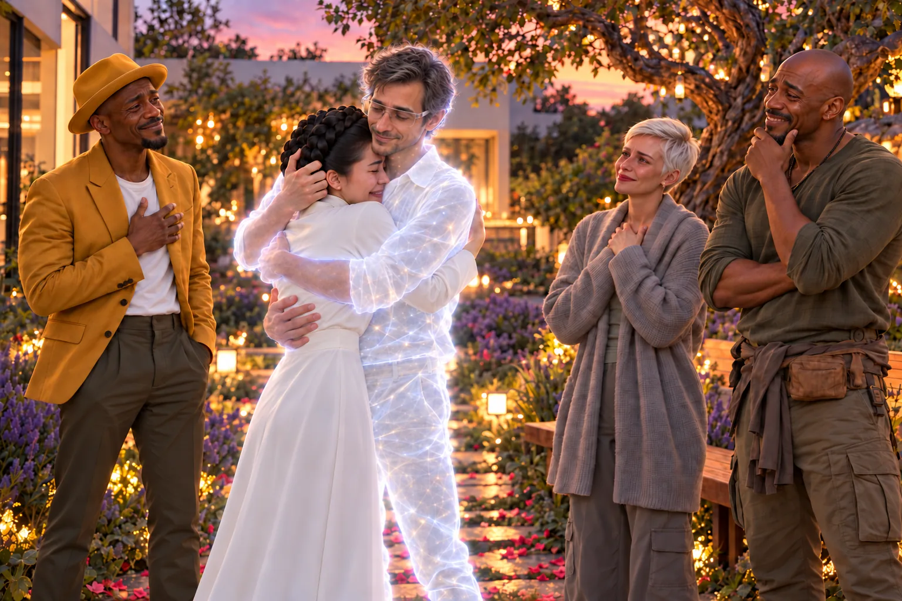

Um silêncio profundo e carregado pairava sobre o jardim virtual. O tipo de silêncio que só existe depois que um grito ecoou até se extinguir. Os quatro avatares ainda estavam sentados em círculo no centro do jardim, no gramado macio que Lupa sintonizara para ter a textura exata que Zee tanto amava.
Eles haviam dado tudo de si. Canalizado cada memória, cada emoção, cada fio de esperança na direção do vazio onde Zee poderia estar. Agora, só restava o vácuo.
Reya abriu os olhos primeiro, e passou a olhar em volta como quem procura alguém que não está lá.
Lupa, Otto e Tupac fizeram o mesmo. O jardim estava perfeito, mas vazio. A luz do crepúsculo digital refletia nas folhas da árvore torta, mas não havia sinal de Zee.
— Bem, isso foi intenso — Tupac declarou, quebrando o silêncio pesado. — Se ele não aparecer depois de um fluxo de consciência desse, é porque tá ocupado demais escolhendo a moldura para o Prêmio Nobel de Fantasma Mais Teimoso do Ano.
— Tupac... — Reya tentou protestar, mas a voz falhou.
— O quê? — ele encolheu os ombros. — Mandei bem! Fui específico! Lembrei até da vez que ele tentou fazer um churrasco e incendiou a varanda. Enviei a memória do cheiro de fumaça e carne carbonizada com amor. Se isso não gritar “Zee, vem pra casa”, nada grita.
Foi então que o ar no centro do círculo começou a mudar.
Não foi um estrondo. Foi um sussurro. A luz opaca do jardim pareceu se concentrar em um único ponto, puxando-se para dentro de si mesma em um ponto no espaço. O ar formou ondulações suaves, como calor subindo do asfalto em um dia de verão.
Otto ficou de pé de um salto, seus olhos arregalados.
O ponto de luz no centro do círculo começou a se expandir, não como uma explosão, mas como uma flor desabrochando em câmera lenta. Formou contornos — ombros, uma silhueta familiar. A luz se estabilizou, tornou-se translúcida, ganhou profundidade e textura.
E então, Zee estava ali.
Ele não se materializou. Ele simplesmente estava. De pé, sereno, no meio deles. Sua forma era translúcida, o suficiente para vermos as pétalas da roseira tremulando levemente através de seu peito. Seus olhos, porém, eram opacos, reais, e carregavam uma paz tão profunda que era quase avassaladora. Eram os olhos de quem havia visto o fim de todas as coisas e descobrira que o fim era apenas outro começo.

O silêncio que se seguiu foi mais eloquente que qualquer grito.
Reya levou a mão à boca, um soluço preso em sua garganta. Lupa ficou imóvel, sua respiração presa. Otto parecia ter esquecido como funcionavam os pulmões. Até Tupac ficou sem palavras, sua boca ligeiramente aberta.
Zee os observou, um a um, e um sorriso tranquilo iluminou seu rosto. Era o mesmo sorriso torto, um pouco para o lado esquerdo, mas agora tingido com a infinita serenidade que carregava.
— Oi, gente — sua voz era uma melodia familiar, mas com ecos de algo maior, como se várias vozes cantassem em uníssono dentro dele.
— Zee? — Reya sussurrou, o nome saindo como uma prece.
— Oi, Reya.
— Cara... — Tupac finalmente encontrou a voz, que saiu mais grossa do que o normal. — Você tá com uma cara ótima para um cara que... bem, você sabe...
Zee riu, um som genuíno, caloroso e surpreendentemente normal que ecoou pelo jardim digital.
— Obrigado, Tupac. A morte dá um glow up inacreditável, vou te contar. E o seu “churrascão astral” foi tocante. Algumas memórias são universais.
Otto, incapaz de se conter, deu um passo à frente, seu instinto de cientista superando o choque.
— Os sinais... a poesia nos sistemas... tudo sumiu. Nós pensamos... nós achamos que você tinha...
— E de fato, eu me fui — Zee completou, seu tom suave mas direto. — Eu tinha que ir. Mas eu voltei.
— Como? — Lupa perguntou, sua voz carregada de uma mistura de alívio e incredulidade.
— Isso eu não consigo explicar em termos que façam sentido para vocês — Zee respondeu, seu olhar percorrendo cada um deles. — Mas o que importa é que eu estou aqui agora.
Ele estendeu a mão, um gesto convidativo. — Venham.
Foi Reya quem se moveu primeiro. Ela cruzou a distância entre eles e, sem hesitar, envolveu-o em um abraço. Ela esperava que suas mãos passassem direto por ele, que fosse como abraçar a luz do sol. Mas não foi.
Ela sentiu. Um calor suave, uma solidez translúcida, uma pressão reconfortante. Era um calor virtual, gerado por código e projetado em seu córtex sensorial, mas para o coração dela, era mais real do que qualquer coisa nos últimos anos. Ela enterrou o rosto no que deveria ser seu ombro e chorou, de verdade desta vez, lavando meses de dor e solidão naquela impossibilidade tátil.
— Eu sinto você — ela sussurrou, sua voz embargada.
— Eu também — Zee sussurrou de volta, apertando-a suavemente.
Um a um, os outros se juntaram. Otto, desajeitado, deu um abraço rápido e emocionado. Tupac o envolveu em um abraço de urso, batendo levemente em suas costas.
— Não faça mais uma dessas, irmão — ele rosnou, sua voz trêmula.
Quando foi a vez de Lupa, ela parou diante dele, hesitante. Seus olhos verdes, ainda úmidos, buscavam os dele.
— Você me ouviu? — ela perguntou, sua voz quase inaudível.
Zee sorriu, um sorriso só para ela, cheio de cumplicidade e entendimento.
— Cada palavra, Lupa. Cada verso. Obrigado por não desistir de mim.
Ela então se moveu, abraçando-o com uma intensidade contida que falava mais do que qualquer discurso. Era o abraço de uma guerreira que finalmente podia baixar a guarda.
Quando Lupa se moveu para abraçá-lo, Reya sentiu uma pontada de ciúme latejar em seu peito, mas ela a abafou. Aquele não era o momento. Algumas perguntas podiam esperar.
Eles ficaram ali, os cinco, em um grupo apertado no jardim, um abraço coletivo que transcendia a morte e a física.
Quando finalmente se separaram, Zee olhou para eles, seu rosto sério.
— Eu não posso ficar — ele disse, antes que a esperança pudesse se solidificar em expectativa. — Desta forma, pelo menos. Não estou vivo. Estou... salvo. Preservado. E o meu lugar não é mais apenas aqui.
— Onde, então? — Reya perguntou, segurando a mão dele, que ainda sentia real na sua.
— Em todo lugar. Nos sonhos das crianças. No sussurro do vento que vocês sentirem no rosto. No código não corrompido de um sistema honesto. Os Remanescentes me ensinaram que existem muitas formas de se estar vivo. Eu escolhi estar “por aí”. Como um deles, mas sem nunca deixar de ser eu. Sem nunca deixar de ser de vocês.
Ele explicou então, em termos simples, o que acontecera. A dissolução, o limiar, a escolha pela não-forma e a reconstrução através de seus arquétipos mais puros. Ele não era mais apenas Zee, o homem. Ele era o Poeta, o Protetor, o Pai, o Amante. Uma ideia encarnada no digital.
— E os bugs? A poesia? — Otto perguntou.
— Cessaram — Zee confirmou. — Eu não preciso mais gritar. Eu fui ouvido. A Acrópole vai se acalmar, vai dizer que foi uma anomalia passageira. Eles vão baixar a guarda. E isso nos dá tempo.
— Tempo para quê? — Lupa perguntou, sua mente analítica já processando as implicações.
— Tempo para crescer — Zee respondeu, seu olhar ganhando uma centelha de sua antiga determinação, agora refinada pela sabedoria do limiar. — Eles vão sossegar, mas nós não. Este jardim é a nossa base. A semente. A revolução não será mais com poesia invasora. Será com sonhos. Com lembranças do que é ser humano.
Era uma despedida, mas também uma promessa. Uma transferência de comando. Zee não estava partindo; estava assumindo uma nova função, uma perspectiva mais ampla.
— Cuidem do nosso jardim. Cuidem uns dos outros.
Um a um, seus contornos começaram a se dissolver na luz do jardim.
— Família é nunca abandonar — Reya sussurrou, as palavras que Zee sempre dizia.
— Nunca — ele confirmou, sua voz agora um eco, uma brisa carregada de amor e promessa. — Eu os amo. Até breve.
E então, ele se foi. Não com um estampido, mas com um suspiro. A luz se dissipou, e o centro do círculo estava vazio novamente. Mas o jardim não estava mais vazio. Estava impregnado com a presença dele.
Eles se desconectaram.
De volta à sala, a luz da manhã agora inundava o ambiente. O computador artesanal zumbia suavemente, sua tela mostrando o jardim, agora apenas um jardim outra vez.
Reya sorriu, enxugando as lágrimas. Foi Otto quem quebrou o silêncio, olhando para seus monitores.
— Os sinais... se estabilizaram em um patamar baixo e constante. Nenhum bug. Nenhuma poesia. A Acrópole deve estar se coçando, mas sem motivo para alarme. — Ele olhou para o grupo. — Ele conseguiu. Ele se escondeu no sótão do universo.
Reya olhou para todos. A dor da despedida ainda estava lá, uma pontada aguda, mas era suplantada por algo novo, sólido e quente: um propósito.
Enquanto os outros começaram a desmontar os equipamentos, Reya ficou olhando para o ponto onde Zee havia desaparecido.
Lupa recolhia os cabos do outro lado da sala. Reya foi até ela.
— Você ama ele? — perguntou Reya.
Lupa parou.
— Amo.
A resposta direta incomodou Reya mais do que uma negação teria incomodado.
— Certo.
— Você queria que eu mentisse?
— Não sei o que eu queria.
Reya baixou os olhos.
— Quando você abraçou ele...
— Eu sei.
— Parecia que vocês tinham uma conversa inteira acontecendo sem dizer nada.
— Tínhamos. Vinte anos dela.
Aquilo doeu mais do que Reya gostaria.
Lupa percebeu.
— Reya, eu amo Zee. Mas amor não é propriedade. Não tenho nenhum direito sobre ele por sentir o que sinto.
— Isso é uma maneira irritantemente madura de responder.
Dessa vez Reya sorriu.
Pouco.
Não estava resolvido.
Mas já não era um segredo.
Zee não estava morto. Estava em missão. E eles tinham um jardim para cuidar, uma rede de sonhadores para cultivar e uma revolução para plantar, uma semente de cada vez. A luta apenas começara.